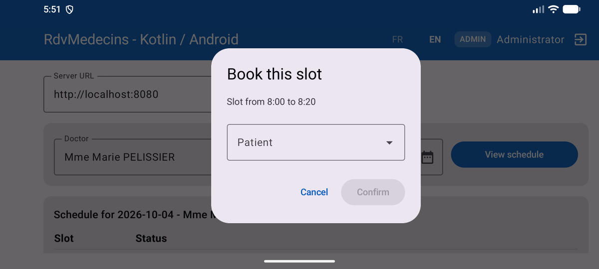

6. Kapitel 5 - Ausführung der App: Emulator, Smartphone, APK
6.1. Ein einziges Ziel: Android
Kapitel 5 des Flutter-Kurses zeigte, wie ein einziger Quellcode für drei Zielfamilien kompiliert wird: Mobilgeräte, Desktop und Web. Das ist hier nicht der Fall: Der Client in diesem Dokument ist eine Android-App – und nur Android. Stattdessen nutzt er direkt die Werkzeuge und Bibliotheken der Plattform ([Gradle], [Android Studio], [ViewModel], [SharedPreferences] ...), ohne Abstraktionsschicht. Der letzte Abschnitt dieses Kapitels erklärt, was nötig wäre, um auch iOS, den Desktop und das Web anzusprechen.
Die Befehle in diesem Kapitel verwenden das Werkzeug [adb] und den Gradle-Wrapper. Wenn unter Windows die Ordner [platform-tools] und [emulator] des SDK nicht in [PATH] enthalten sind, ersetzen Sie [adb] durch [& "$env:LOCALAPPDATA\Android\Sdk\platform-tools\adb.exe"] (siehe Kapitel 1).
6.2. Ziel Emulator
Dies ist das in ganz Kapitel 4 verwendete Ziel. In Android Studio: den Emulator in der Geräteliste auswählen und dann [Run] wählen. Über die Befehlszeile im Projektordner:
6.2.1. Die Netzwerkfalle: localhost bezeichnet nicht mehr den Entwicklungs-PC
Das ist DAS wichtige Detail der mobilen Entwicklung, unabhängig von Kotlin oder Compose: [localhost] (oder [127.0.0.1]) bezeichnet im Feld „Server-URL“ die Maschine, auf der der Code läuft. Der Emulator ist jedoch eine VIRTUELLE Maschine, getrennt vom Entwicklungs-PC, auf dem der [NestJS]-Server läuft, auch wenn beide scheinbar „auf demselben Rechner“ sind. Es gibt zwei Lösungen:
- die Spezialadresse [http://10.0.2.2:8080]: Sie ist spezifisch für den offiziellen Android-Emulator und wird auf den [localhost] des Host-Rechners umgeleitet. Dies ist der Standardwert des Felds „Server-URL“ (siehe [SettingsService.kt]);
- der Befehl [adb reverse tcp:8080 tcp:8080], gefolgt von der URL [http://localhost:8080]. [adb reverse] erstellt einen Tunnel: Jede Verbindung vom Gerät zu SEINEM Port 8080 wird von [adb] an Port 8080 des Computers weitergeleitet. Der Tunnel verschwindet, wenn der Emulator beendet wird (oder wenn der [adb]-Server neu startet): Dann muss der Befehl erneut ausgeführt werden.
Die erste Lösung ist die einfachste. Auf dem Computer, mit dem dieses Dokument geschrieben wurde, funktionierte sie jedoch nicht: Die Verbindung zu [10.0.2.2:8080] schlug nach einem Timeout von 10 Sekunden fehl, obwohl der Server auf [localhost] normal antwortete. Dieses Problem hängt von der Netzwerkkonfiguration des PCs ab (Firewall, VPN, Virtualisierungssoftware): [adb reverse] umgeht es, da der Datenverkehr dann über [adb] statt über das virtuelle Netzwerk des Emulators läuft. Die von der App angezeigte Meldung („Incorrect login or password.“) gibt wenig Aufschluss; die genaue Ursache findet sich im Android-Log, dank der Aufrufe des Clients von [Log.w(...)] (der Tab [Logcat] in Android Studio, gefiltert nach [RdvMedecins], oder der Befehl [adb logcat -s RdvMedecins]):
Der Befehl [adb reverse] und die URL [http://localhost:8080] (von [SettingsService] gespeichert) lösten das Problem: Dies ist die Konfiguration, die für alle Screenshots in Kapitel 4 verwendet wurde.
6.3. Ziel Smartphone
Das in Kapitel 1 eingerichtete Smartphone (Entwickleroptionen, USB-Debugging) erscheint in [adb devices] und in der Geräteliste von Android Studio: Es funktioniert genau wie der Emulator ([Run] oder [gradlew installDebug]). Nur die URL des Servers ändert sich:
- Smartphone per USB-Kabel verbunden: Der Befehl [adb reverse tcp:8080 tcp:8080] funktioniert auch mit einem echten Smartphone, und die URL [http://localhost:8080] erreicht dann den PC-Server über das Kabel. Das ist die einfachste Lösung;
- Smartphone im selben WLAN wie der PC: Verwenden Sie die LOKALE IP-Adresse des PCs in diesem Netzwerk (zum Beispiel [http://192.168.1.48:8080]; der Befehl [ipconfig] zeigt sie unter Windows an), niemals [localhost] oder [10.0.2.2], da beide in diesem Fall das Smartphone selbst bezeichnen. Die Firewall des PCs muss dann eingehende Verbindungen auf Port 8080 zulassen (Windows fordert Sie beim ersten Start von Node.js dazu auf).
Der [NestJS]-Server lauscht auf allen Netzwerkschnittstellen des PCs ([0.0.0.0]): Auf seiner Seite sind keine Änderungen nötig.
6.4. Zwei mobilspezifische Einschränkungen
6.4.1. Unverschlüsselter HTTP-Verkehr
Seit Android 9 (API 28) darf eine App standardmäßig nicht mehr per HTTP im Klartext kommunizieren ([http://], unverschlüsselt): Nur [https://] ist erlaubt. Da der Server dieses Kurses über reines HTTP lauscht, deklariert das Manifest des Clients die Ausnahme [android:usesCleartextTraffic="true"] (siehe Kapitel 4). Ohne sie schlägt jede Anfrage mit der Ausnahme [CLEARTEXT communication to 10.0.2.2 not permitted by network security policy] fehl.
Diese Erlaubnis gilt für ALLE Server. Eine feinere Konfiguration ist mit einer Datei [res/xml/network_security_config.xml] möglich, die HTTP im Klartext nur für bestimmte Hostnamen zulässt:
Die Datei wird im Manifest über das Attribut [android:networkSecurityConfig="@xml/network_security_config"] des Tags [<application>] deklariert. Dieses Dokument verwendet sie nicht: Die IP-Adresse eines PCs in einem WLAN ist nicht im Voraus bekannt. In beiden Fällen gelten diese Einstellungen nur für die Entwicklung: In der Produktion wäre der Server unter [https://] erreichbar (zum Beispiel hinter einem „Reverse Proxy“ wie Nginx), wodurch jede Ausnahme überflüssig würde.
6.4.2. Berechtigung für den Netzwerkzugriff
Ohne die Zeile [<uses-permission android:name="android.permission.INTERNET" />] im Manifest schlägt die erste Anfrage mit einer Ausnahme [SocketException: socket failed: EPERM (Operation not permitted)] fehl (oder mit einer Ausnahme [SecurityException: Permission denied (missing INTERNET permission?)] , wenn die URL einen Hostnamen enthält). Das ist ein häufiges Versäumnis: Die Projektvorlage von Android Studio enthält sie nicht.
6.5. Bildschirmdrehung
Das Drehen des Smartphones (oder des Emulators über die Drehbuttons in seiner Seitenleiste) ZERSTÖRT die Aktivität und ERSTELLT sie anschließend NEU (siehe Kapitel 3). Der Client bewältigt dies dank dreier in Kapitel 4 getroffener Entscheidungen:
- Die Services werden von [RdvMedecinsApplication] erstellt, die nicht neu erstellt wird;
- Der Bildschirmzustand (Ärzte, Patienten, Kalender, aktuell gebuchter Slot) liegt in [AppViewModel], das Android beibehält;
- Kleinere Oberflächenzustände (eingegebene Anmeldung, gewählter Arzt und Tag, im Dialogfeld gewählter Patient) liegen in [rememberSaveable].
Die folgenden Screenshots wurden bei geöffnetem Buchungsdialogfeld aufgenommen: zuerst im Querformat, dann wieder im Hochformat. Das Dialogfeld, der Kalender sowie der gewählte Arzt und Tag sind weiterhin vorhanden:


Im Querformat ist der Bildschirm über 600 dp breit: Die Titelleiste zeigt den vollständigen Titel und den Namen des Benutzers an, und [DoctorDayPicker] ordnet seine drei Elemente in einer einzigen Zeile an:

Um den Wert dieser Entscheidungen zu beurteilen, können wir das Gegenteil ausprobieren: In [App.kt] ersetzen wir [val vm = viewModel { AppViewModel(auth, api) }] durch [val vm = remember { AppViewModel(auth, api) }]. Nach einer Drehung verschwindet der Kalender, und die Suche muss erneut durchgeführt werden: [remember] überlebt die Neuerstellung der Aktivität nicht.
6.6. Ein schmaler Bildschirm: die Layout-Falle
Ein Smartphone im Hochformat ist nur etwa 400 dp breit. Die erste Version von [ScheduleView.kt]stolperte, wie die des Flutter-Clients, über diese Breite. Jede Zeile des Kalenders teilte die verfügbare Breite mit festen Gewichten auf ihre drei Spalten auf – 30 % für die Uhrzeit, 45 % für den Status und 25 % für den Button ([Modifier.weight(0.25f)]). Auf dem Smartphone reichten in der französischen Oberfläche 25 % der Zeile für die Beschriftung „Réserver“ nicht aus, die zu „Rése“ abgeschnitten wurde:


Die Korrektur (Screenshot rechts; siehe [ScheduleView.kt] in Kapitel 4): Der Button hat kein Gewicht mehr und nimmt die Breite seines Textes ein; die Uhrzeit hat eine feste Breite; der Status nimmt die verbleibende Breite ein ([Modifier.weight(1f)]). Daraus folgen zwei Regeln, dieselben wie beim Flutter-Client:
- Nehmen Sie nie eine Breite an: Lassen Sie entweder ein Element die Größe seines Inhalts annehmen, oder prüfen Sie die tatsächlich verfügbare Breite ([BoxWithConstraints], [LocalConfiguration.current.screenWidthDp]), um ein Layout zu wählen;
- Testen Sie frühzeitig auf einem schmalen Bildschirm und in beiden Sprachen: Die englischen Beschriftungen („Book“, „Cancel“) sind kürzer als die französischen, und ein Fehler tritt möglicherweise nur in einer der beiden auf.
6.7. APK erzeugen
[gradlew assembleDebug] (Kapitel 1) erzeugt [app/build/outputs/apk/debug/app-debug.apk], eine „Debug“-App: Mit einem von Android Studio automatisch erzeugten Entwicklungsschlüssel signiert, lässt sie sich auf einem Emulator oder Smartphone installieren ([adb install app-debug.apk]), kann aber nicht im Play Store veröffentlicht werden. Für die tatsächliche Verbreitung:
Eine Produktionsversion muss mit einem persönlichen Schlüssel signiert werden, der einmalig erstellt und sicher aufbewahrt wird: Android Studio bietet dafür das Menü [Build / Generate Signed App Bundle or APK...] an. Der Play Store verlangt außerdem ein Symbol, eine Datenschutzerklärung ... und einen Server unter [https://].
6.8. Und iOS, Desktop- und Web-Apps? Kotlin Multiplatform
Der Flutter-Client des Kurses erzeugte Mobil-, Desktop- und Web-Apps aus einer einzigen Codebasis. Das Äquivalent gibt es im Kotlin-Ökosystem: [Kotlin Multiplatform] (KMP) ermöglicht es, Kotlin-Code zwischen Android, iOS, Desktop (JVM) und Web zu teilen, während [Compose Multiplatform] von JetBrains Jetpack Compose auf dieselben Ziele erweitert. Die Portierung des Clients in diesem Dokument würde vor allem darin bestehen, Android-spezifische Bibliotheken durch plattformübergreifende Entsprechungen zu ersetzen:
- [OkHttp] → [Ktor Client], der plattformübergreifende HTTP-Client von JetBrains;
- [SharedPreferences] → eine plattformübergreifende Bibliothek für Schlüssel-Wert-Speicher (zum Beispiel [DataStore], das inzwischen plattformübergreifend ist);
- der Android-Ordner [assets/] → Ressourcen von Compose Multiplatform;
- [android.util.Log], [Handler] → ihre plattformübergreifenden Entsprechungen (oder Coroutinen auf [Dispatchers.Main]);
- Die Application-Klasse und die Aktivität bleiben bestehen, aber nur für das Android-Ziel: Jedes Ziel hat seinen eigenen Einstiegspunkt.
@Composable-Funktionen, die [@Serializable]-Klassen, Coroutinen und sogar das ViewModel (auf Multiplatform verfügbar) blieben nahezu unverändert erhalten. Diese Portierung geht über den Rahmen dieses Dokuments hinaus.
6.9. Übersichtstabelle
- Android-Emulator - [Run] oder [gradlew installDebug] - Server-URL: [http://10.0.2.2:8080] oder [adb reverse tcp:8080 tcp:8080] gefolgt von [http://localhost:8080];
- USB-Smartphone - [Run] oder [gradlew installDebug] - URL: [adb reverse tcp:8080 tcp:8080], dann [http://localhost:8080];
- WLAN-Smartphone - [Run] oder [gradlew installDebug] - URL: lokale IP-Adresse des PCs, Port 8080 in der Firewall geöffnet;
- in allen Fällen: Berechtigung [INTERNET] und Erlaubnis für HTTP im Klartext im Manifest;
- Verbreitung: [gradlew assembleRelease] (APK) oder [bundleRelease] (Play Store), mit einem persönlichen Signaturschlüssel.